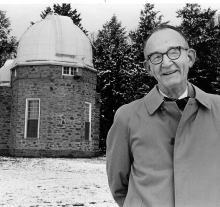

Please note: the AAS Obituaries are temporarily being hosted on this website while their full content is being ingested into the PubPub publishing platform newly adopted by the Bulletin of the American Astronomical Society. When the migration is complete, your existing links will take you to the final, migrated content. Contact peter.williams@aas.org with any questions.
Louis C. Green (1911-1999)
Louis Green was born in Macon, Georgia in 1911 and joined the faculty of Haverford College in 1941. For over 50 years, as Professor of Astronomy and College administrator, he played a central role in the life of the College and of its faculty, and inspired generations of students. Louis died on April 10, 1999.
Both of Louis Green's degrees were from Princeton. His PhD was done under the supervision of Henry Norris Russell, but he worked most closely with Alan Shenstone. Indeed, Louis' scientific work was most clearly influenced by physicists, both at Princeton and by European colleagues working in quantum physics and spectroscopy.
His first scientific publications were on spectroscopy, particularly the wavelengths and line strengths of heavy elements of astrophysical interest. He brought these research interests to Haverford, and carried out experiments in the basement of the Observatory through the 1940s. Later, Louis applied many of these findings to the spectra of stars, especially magnetic and peculiar A stars. Leading researchers and observatories provided him with high-resolution spectra which he and his students analyzed. In the 1960s and 1970s, his interests broadened to the internal structure of rapidly rotating and binary stars, and more generally to stellar evolution. Louis was quick to recognize the advantage of automatic computation to these studies and to those of other scientists at Haverford. In this connection, his long, collegial friendship with Martin Schwarzschild may have played a role. The mainframe computer he brought to Haverford in the 1960s replaced a brace of mechanical adding machines used to calculate stellar structures. The cranks of these machines were turned by Louis and an army of students and colleagues, many of them now productive scientists. An encouraging fraction of the young scientists introduced to research by Louis Green were women, women who now hold posts at a number of academic institutions and national observatories. Louis remained active, alert and interested in research right up to his last years. An elegant manuscript on mathematical astrophysics occupied his last decade, and even when wheelchair bound, he came to scientific talks at the College.
Louis Green's contributions to the scientific literature were important, thorough and always extremely careful. His greatest contribution to our field, however, was that he inspired generations of young scientists, now scattered in scores of institutions in the U.S. and elsewhere. Louis was not only a stimulating lecturer, but his teaching extended well beyond the classroom. He directly involved his students in real research. In a casual conversation I had some 15 or 20 years ago with Joe Taylor, one of his former students, Joe remarked, "Louis Green must have trained more astronomers than any other person in the country." I suspect that may well be true. We too often forget that the first step in producing future scientists occurs in their undergraduate years. Louis took great, but quiet, pleasure in the scientific careers that started here and led to positions at Caltech, Harvard, NASA, Princeton, Texas and a host of other universities and observatories stretching from Germany to California. These men and women are Louis' heirs, and they and many others who knew him will miss his acute mind, his courtly kindness and his wry humor.
Photo (Louis Green by the Strawbridge Observatory at Haverford College) courtesy of Haverford College.
Obituary written by: R. Bruce Partridge (Haverford College)
BAAS Citation: BAAS, 1999, 31, 1600
SAO/NASA ADS Bibcode: 1999BAAS...31.1600P